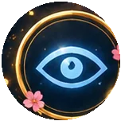
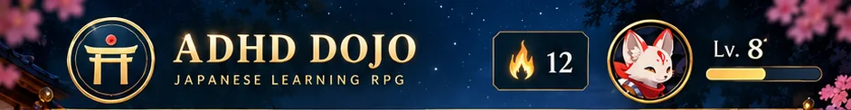
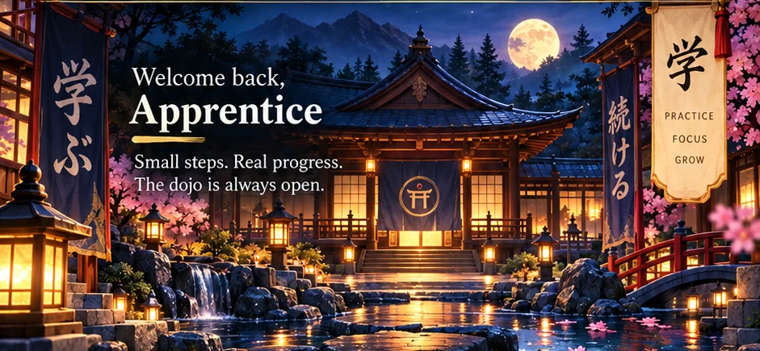
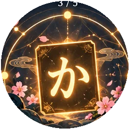
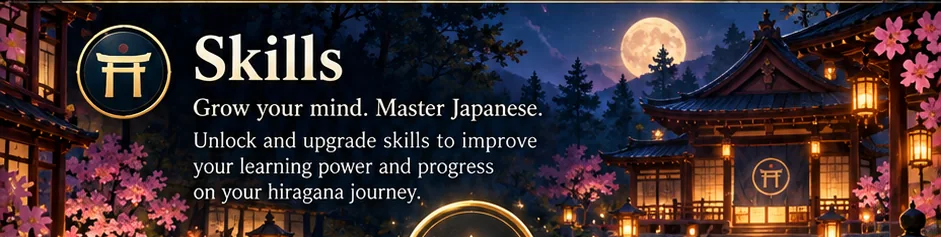
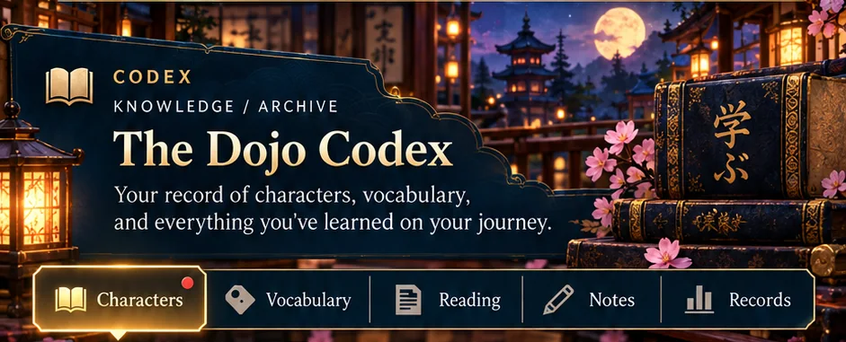
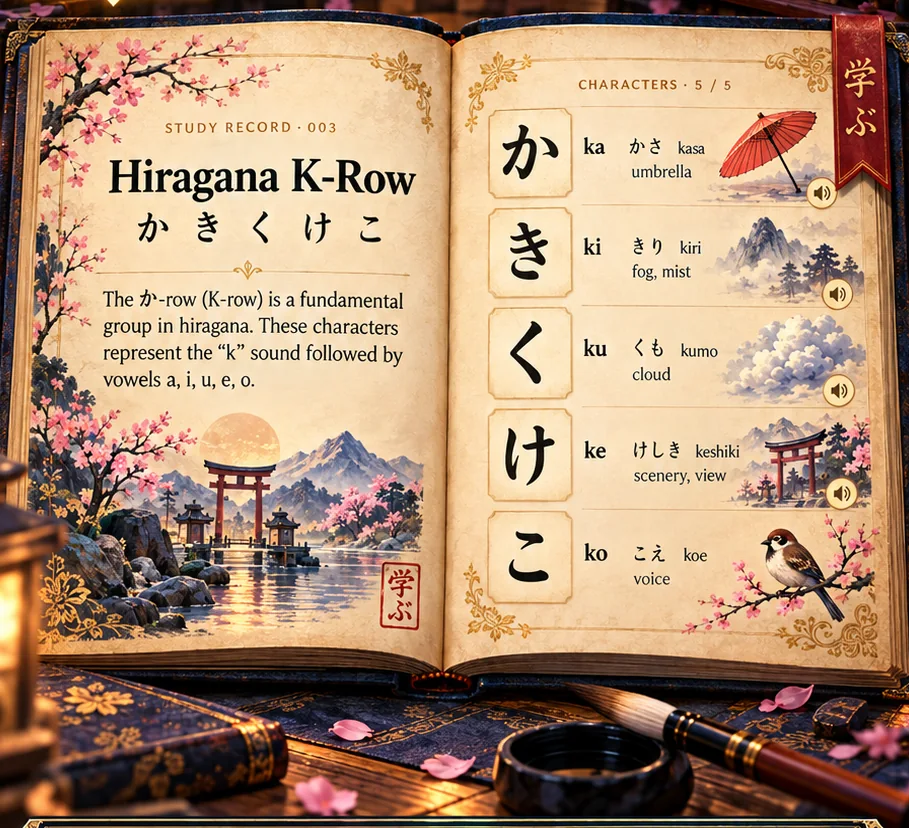
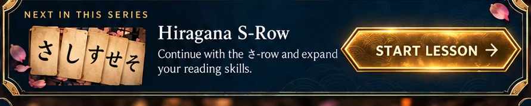
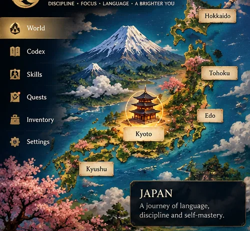

ACTIVE QUEST · ひらがな
Rebuild the K-row
Reconstruct five kana, then recall their sounds without choices.
Two practice stages: reconstruct, then retrieve from memory.



Reconstruct five kana, then recall their sounds without choices.
Two practice stages: reconstruct, then retrieve from memory.
Quest feedback reflects saved K-row practice on this device. Levels and XP printed in other concept artwork remain illustrative.
Choose a challenge. Build real skill.

Reconstruct five kana and recall their sounds without choices.
Two stages: reconstruction and unaided recall.
There is no saved quest history yet. Completed K-row reps currently stay in the training module on this device.
Milestones will be based on completed recall and practice evidence, not decorative XP or lesson views.
For now, open Skills to explore the demonstrated learning capabilities in this prototype.

Select a glowing skill node to inspect its learning evidence.


Tap a character to hear its reading.
Associate known hiragana with authentic vocabulary and later with kanji. This chapter is a small structural preview, not a filled dictionary.
Take your existing kana knowledge into a passage from Go Rin no Sho, then inspect words and clause boundaries.

A painted atlas of Japan, connected to the interactive world-map experiment.

Explore Japan, zoom into Kyoto and enter the Practice Hall. The original world-map interaction is preserved in its own working experiment.
Explore overworld